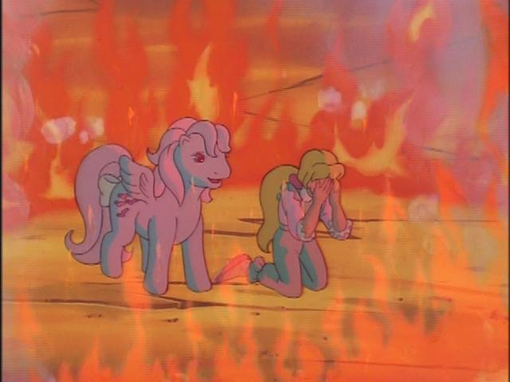

Hangover Archives: 2021–02
Virtual fucking YouTubers!!!!!
Fellas, I’mma keep it real with you. I been writing like 100 words a day, 200 tops. I’ve been over here slapping my nuts and sipping nascently-flavoured carbonated water like a hamster sips the water out of those plastic bottles you hang on their cage and they have to use their tongue to sip up through a metal straw with a hemispherical stopper and when you press the finger on the tip it comes out all over your hand like the precum of a particularly desperate bottom, and if you don’t replace the water for a week it gets all stale because of the plastic and the hamster feels undignified because of it and they have to go shopping around for new caretakers like that one episode of that anime about a psychic, whose name is Saiki K., which sounds a bit like “psychic” in English, and also his last name is Saiki as opposed to his first name because Japanese naming conventions are more schizophrenic than The Dwarf after tainting his food supplies with experimental hallucinogens, and then 4chan made a VTuber board.
I thought Hiromoot would have cooled off on appealing to weeaboos after unceremoniously inheriting an anime website then being turned into a rabbit girl who wasn’t even popular enough to get porn of her, but here we are. Much like the Spooky Boogie saga of Psycho-Pass where the detectives attend a virtual reality party to arrest an e-girl, our current existence has allowed prospective women and 3.696969% men to put on a big-titty anime girl avatar and congregate legions of simps around them in a rally for money, attention, and jabronies playacting as Howard the Alien and annoying random erotic roleplayers dressed up as anime children. Yes, I’m talking about the world of VTubers! I would very much like to talk about anything other than the world of VTubers, but since 4chan now has a VTuber board — a fucking VTuber board, of all things now — I must now tell you about the trials and tribulations of Froge’s own experiences with the Virtual Tuber menace. I have none, so this will be a short Hangover.
So, what is a VTuber? You know that woman who showed up on David Letterman as a hologram like the ghost of Tupac then got an advertising campaign with Scott from Domino’s Pizza and went on to invent Minecraft and Harry Potter while killing every single transphobe with her lesbian transwoman hands? It’s like that, only instead of being a Vocaloid mascot painstakingly pre-animated and presented by hoards of artists, VTubers are the mascots, and perform as their virtual avatars using facial rigging software to map their horrific real-world meatsack faces into a cute and cuddly anime girl avatar, which can end up getting them banned from streaming platforms when it turns out the creator of the original assets copyright claims their identities and steals their body and name so the performer does all of the work but ends up owning nothing because an external party abuses obsolete laws to profit from a career they did nothing to build. YEAH, WRITE THAT IN YOUR STORYLINE CYBERPUNK 2069.
Because anime is to White people what four litres of bleach is to a curious toddler’s digestive system, this phenomenon has been almost entirely Japanese, with the first VTuber being invented in 2016 and from thereon remaining obscure outside the country, save for a collective of otaku whose weight is higher than their credit scores. The culture borrows heavily from idol culture, which is even more cancerous due to being 3DPD, and a large part of a VTuber’s career is presenting themselves in the manner of an idol and developing a carefully-curated personality to appeal to different groups of potential fans, including “debuts” for their avatars typically including an overproduced theme song, and further debuts for later developments such as a 3D whole-body rig. If you’re thinking this is akin to looking behind the mascot costume and seeing the sweaty human being inside, then you can take solace in knowing you’re not the only one who finds this whole affair completely fucking terrifying, because I find it completely fucking terrifying, and only through the power of deliberate ignorance can we take happiness in simping for anime women.
Unfortunately, normies ruin everything, and since COVID-19 fucked our collective heterosexual-leaning assholes, millions of losers stuck inside with nothing better to do than slap their nuts and retrofit hamster bottles above their beds ended up taking solace in cute girls doing cute things. In 2020, Virtual YouTubers took over YouTube virtually, and these safe-for-work camgirls started appearing in the recommendation feeds of everyone who ever has, or ever will, enjoy an anime. The dozens of big-name VTubers and hundreds of independent performers means some producer out there has already analysed your exact personality traits and have created a VTuber to directly embed itself into your brain. Statistically, there’s a VTuber for everyone, and with streaming platforms shilling them so hard to anyone they have identified as a weebaoo, it’s no wonder why they’ve gotten so popular. Even Big Pharma has gotten in on the trend: “Nebasei Cocoro is a female Japanese Virtual YouTuber and a representative of Rohto Pharmaceutical Co.”. The Rohto corporation Wikipedia page says “the company has a manpower strength of close to 5000 employees,” which means it could institute a coup in Vatican City and elect Cocoro-san as God of the Weebs, and also God of the Eyedrops, Lip Balm, and other High-Quality Pharmaceutical Products.
Where independent artistry lies dormant, capitalist vultures come to the graveyard to dig up the corpses and puppet them around for cash and country. The VTuber scene is thus split between dozens of different agencies who represent and promote the talent while taking a cut of whatever donations their loyal fans give them, with the two biggest-dick agencies around being Hololive capturing the entire Western market and maintaining dominance in 2021, with Nisisanji trailing far behind in second place with little reputation outside of Asia. VShojo is the biggest United States company, founded by MowtenDoo of all people (yes, the “Nichismoke” dude), who have obtained a cult following due to being seen as the most perverted of all the agencies, with one woman being a literal camgirl, insofar as it’s possible to be one when you’re puppeteering a model. While these agencies dominate the vast majority of the VTubing scene, it is also trivial to find independent VTubers who use the facial rigging technology without the celebrity culture the rest of the industry promotes, and will even collaborate with talent from these agencies as mutual exposure between groups of fans who would otherwise only watch one particular presenter.
The culture of VTubing is cancerous, like all anime, but its cancer is limited to being a subgroup of a much larger anime fandom which is already notoriously unpopular. VTuber fans are, in effect, the bronies of weeaboos, being a mere curiosity among the animu fandom and just as misunderstood. Despite surface-level analogies to the similarly idol-obsessed K-Pop stans, VTubing culture is more polite and pragmatic than it first appears, with inter-fandom shitflinging kept to a minimum and the attention economy being based around supply and confidence rather than manufactured controversy. Supply, in that there are an infinite number of VTubers to be fans of and a small core group of agencies to keep track of, leading to a scenario where everyone knows everyone else while choosing to remain secluded in their own little slice of the fandom. Confidence, in that VTubers are by and large professional entertainers who abide by standards set by their management to avoid offending their partners and rivals, where gossip between presenters is nonexistent and there are very, very few on-screen composure failures. These twin factors lead to a scenario where there is no drama because there is no need for drama, and what little material does slip through the carefully-curated veil of secrecy the agencies maintain is not nearly enough to stain the community beyond ephemeral amusement.
However, there is one amusing titbit of lulz and fail that’s currently going on in /vt/’s bedroom: orangeposting. On the first day of /vt/’s creation, some anon pointed out that the first VTuber was not, in fact, some cheap whore from Japan who debuted in 2016, but was in fact the honest and upstanding American presenter known as… the Annoying Orange. Yes, the Annoying fucking Orange. It was further noticed that despite the enormous popularity of the “original” VTuber Kizuna Ai, she only has 3,000,000 subscribers, whereas Annoying Orange has 10,600,000 subscribers. And then, when certain Hololive fans complained about these conclusions, the Annoying Orange posters pointed out the hypocrisy of policing what gets to be posted on /vt/ when they had spent the past three years taking over /jp/ and forcing the creation of a Virtual YouTuber board in the first place. With these three factors in place, we had a meme, we had a dream, and we had a common enemy to enact a crusade upon.
The outburst of Annoying Orange memes swamped the board and lead to the creation of one of 4chan’s most bizarre and unexpected fads. Threads were constantly posted making fun of the Holobronies and their beloved celebrities for being inferior to the Annoying Orange’s massive popularity, hijacking trendy memes such as soyjack and sneedposting to create their own little subculture of circlejerking against anyone who complains about the presence of the orange VTuber on the VTuber board, even to the point of saying it was an “orange board” and that Hololive fans are the cheap imitations. Much butthurt and lulz occurred, with recurring thread themes being various ways to make fun of Hololivers and the taking over of /vt/ as their homegrown board, in the same way that unironic VTubers took over /jp/ by calling them “Japanese culture”, calling out the hypocrisy of moderators for deleting Annoying Orange threads when they’re objectively the most popular VTuber. In just three days, the meme culture evolved from a protozoa to a gorilla, replacing terms such as “based”, “cringe”, and “bluepilled” with “peared”, “knifed”, and “appled”, turning sneed into seed, and developing their own massively-popular generals to keep the circlejerk alive. There’s only one thing to say in the face of such incredibly dank memery: orangechads… I kneel…
Through my few days of exposure through /vt/ and checking up on the evolution of the Principality of Orange, I have learned more about two-dimensionally tweened apparations of fictional anime women than I ever cared to know, and I now have a respect for this cultish fandom that I would not otherwise have if Hiromoot didn’t bring this safe space to life. I now know all the big names in the fandom, and though I won’t dedicate a significant portion of my life to admiring them, I will watch the fandom from afar and observe their interests like a researcher does for the mentally-deficient animals they have observed in their cages, waiting for them to enact an interspecies war out of nowhere and wipe out the entire population like those hamsters the government repossessed from my basement. I do not hold any resentment for these women or their fans on the basis of their popularity, nor can I say they’re as intrinsically worthless as any other form of proletariat entertainment. There is, as the French say, a certain je ne sais quoi about these uncanny, embarrassingly weebish personas, and although I’m not horny or desperate enough to simp over anime women, I can say the world would be a less interesting place in their absence, and I’m glad there are enough autistic idiots in the world to keep this culture alive.
ALSO WE STAN #VOMSPROJECT IN THIS BITCH, BOY IF YOU DON’T GET ON THAT GYARI TRAIN YOU DON’T GET NUTTIN’!!! FUCK HOLOCELS, FUCK VSHITTERS, FUCK THE ORANGECHADS, WE ONLY RECOGNISE QUEEN PIKAMEE AND HER HAREM OF ELEMENTAL JABRONIES!!! It’s funny because she’s a pedophile.
DigiBronyMLP is a Fucking Cunt
If it wasn’t for her, every metric of my intellectual and artistic pursuits would be immature, developmentally-stunted, and incoherent. Her creations have enhanced my understanding of myself and my philosophy of the arts to a degree where she has become mentor to someone she has not and will never, ever meet. Her monastic, almost maniacal devotion to a space on the Internet which is of little interest to anyone outside her own head is fundamentally flawed by all mainstream measurements of success, and despite this she has exercised the courage and conviction to produce her own form of criticism, her own form of art, regardless. She is one of the most fascinating, aggravating, intelligent, confusing, diegetic, unapologetic, and human individuals I’ve ever had the privilege to take inspiration from. There is nothing I can do with my current skill that matches her artistic output, that matches what I can to do pay it forward for those who take inspiration from me, and I am forever in debt to her for spending years of her life in pursuit of something so meaningless all for the sake of finding meaning within her own life. DigiBronyMLP — Beatrice — is someone I don’t know how to match. I will spend the rest of my life with her in my heart, with her knowledge in my head, with her existence as some small part of mine, until the day I die, and I do not think I will ever find someone who has impacted me in such a way as she did during her decade of writing about art.
And she is a fucking cunt.
The story is… heartbreaking. She lost her fiancé. She lost her career. She lost her dosh. Bluntly, transitioning is a bitch, and the trans woman is the most disrespected member of America outside the Black woman, unloved, neglected at every level. Even for those who love trans bitches, Beatrice occupied her time in creating what she wanted to make as opposed to what her fans — including me — had followed her for all these years, before we had any notion of her transness. Her channel died. I wrote about it. Her channel kept dying. I wrote about it again. Now here we are, and she is deleting her channel, taking this hyperbolic death metaphor to its final conclusion and removing the seven years of history I spent my formative years appropriating as part of my human core. They have spent far, far longer worrying about their own sense of self, their sense of being, and their sense of whatever they’re doing existing in this world than I have, and my own neuroticism is nothing compared to hers, especially in consideration of the suffering she had spent all these years ignoring in favour of making YouTube videos for me to figure out who I am through the consumption of.
For these reasons, I am truly, fucking, sorry for what she’s gone through, and for my arrogance in not understanding the full picture she provides even in synopsis. But she is a fucking cunt, and these words are righteous.
20 hours of the best media analysis that will ever be published on YouTube by any anime critic, ever. 6 hours of going through every anime she has ever watched and rating them one-by-one all for the purposes of developing a consistent and complete critical philosophy. 187 minutes of an unecessarily in-depth argument on lolicon pornography and the amorality thereof. 80 minutes of depressing, revealing personal anecdotes about her sense of self and how she operates in this world. The first three episodes of The Pleeb and the Weeb, which is Red Letter Media for jabronie weeaboos, and one of the funniest series she’s ever pulled off. Whatever the fuck this is. And even all those My Little Pony analysis videos, as created by DigiBronyMLP, which launched her channel in the first place. All of this, and all the thousands upon thousands of other videos that she has been involved in over the past seven years… gone. All gone.
To say this is one of the worst days of my life, with all the trauma I’ve endured in it, is an exaggeration. It would not be in the top 100 on that list, and if I can remember 1000 days, it may not even be on there. I feel about this announcement the same way I feel about all events out of my control. Helpless, and therefore, tranquil. She has decided to delete the contents of her channel. I have no say in that. I would obviously and intensely, with the immeasurable impact she’s had on my life, encourage her to not delete her channel, to not erase seven fucking years of history, to not destroy the heritage which she spent so long crafting, to not destroy this heritage which was so influential in crafting me, and to not go through with this plan to annihilate everything she had worked for all these years out of a sense of closure which — I know from experience — will never be whole, and will always struggle to feel closed so long as you hold on to the feeling that you can change the past. You can’t change the past, you can’t change who you are, and you can’t change who you were in the past on the way to the present in an effort to change the future. It must remain, and even if you try to delete it, it will remain. The only thing you can do? Stop trying to pick up and rearrange the pieces of your former broken self, and get the fuck over it.
But I have no say in that. Shikata ga nai.
There’s hope. She influenced many. Thousands, perhaps tens of thousands, of her loyal cultists congregated around her in hopes of wisdom. They have not left her, even with her purposeful self-destruction. She titled her farewell video “You Have 3 WEEKS To Archive My Channels’ Content Before It All Goes Private”, and her followers have obliged. As I write this there exists protozoic archives of her work, composed of one of two videos, to chip away at her four-thousand video backlog. A thread on the DataHoarder subreddit was made, calling for interested archivists. With such an autistic, data-obsessed community under her belt, combined with the generous length of time she’s given her sycophants, the backups will be swift and bountiful. Perhaps one day, years in the future, I’ll be staring out from above my newfound fans and looking back on the man I used to be, still obsessing over the woman who made me who I am today, trawling through archives upon archives looking for wisdom from a more civilised era, learning nothing from staying in the past, stagnating.
And now, with my future abandonment of my present name… let’s talk about me.
I have three months to do everything I want to do under Froge. Despite this time limit, and despite the pressure I put on myself to make something of it, I feel similarly tranquil. Death comes for us all, and I am retiring my name before I unceremoniously leave it to rot on a digital page with no hope of it ever being used again. The reasons for this are similar to those of Beatrice. I am not the same person I was four years ago, I’m not interested in stagnating with the same work I have been creating, and I’m not interested in recollecting these years over and over again for a misguided comfort to the detriment of my other interests. As she has outgrown her physical body, I have outgrown mine mentally, and this persona I’ve created for myself is grinding against my exoskeleton and demanding I molt into something more. I have the privilege to do this more gracefully because I did not have any of the success or admiration she had received; all my fans are silent. I can die because I have the opportunity to declare myself dead. My corpse will remain, picked apart by curious vultures like I pick apart the works of my greatest influence, but my soul will have moved on. And Froge, for all intents and purposes, will be dead.
These circumstances reveal a delusion in our hearts where we can continually kill our prior selves in favour of the fiery rebirth of a later explosive comfort, removing ourselves from what we used to be in favour of what we hope we will become. We suggest that by hiding from ourselves, we will become better than ourselves, and so we strangle our mediocrity to provide sustenance for our brilliance. We change our name, our identity, but our names and identities aren’t really who we are, right? And when we fall asleep with our new names, wake up with our new names, work with our new names, and repeat with our new names, we find that the abandonment of a name isn’t the abandonment of us, and that we’re still the same stupid selves no matter what collection of sounds and script we call ourselves. All words are, are words, and it’s the effort we must take to change ourselves that will change ourselves, no matter how small our achievements in doing so.
Her rebirth is unceremonious, with endless projects unfinished and the abandonment speedy. Only six minutes summarises all her trauma, where hundreds of hours of video content had failed to connect. Perhaps her deliberate avoidance of leaving her fans out to pasture, trying in vain to find incidental reuploads of her work which would otherwise be destroyed in an instant, shows this respect for who she was and where she came from, both informants of who she wants to be. This same respect I have, and this same respect I keep in mind when I state I will not delete my online works. Perhaps she knows that deleting her work won’t fix who she is, but believes that doing so will still be of benefit to her regardless. After all, who does she live for if not for herself? And who do I live for, in my meagre Internet form, if not in service of my unfortunately real, unfortunately physical self? A madness mantra in service of endless work is only righteous if that work is also in service of the self who creates it. The alternate mantra, “be useful or die”, is ignorant. We don’t die because we are useless. We are useless because we’re too afraid to invoke the privileges life gives us, unasked for, yet given regardless.
I’m no phoenix, and I know the effort means nothing in the end, whether that’s effort in work or life or anything. But my death is in my own service, hers is in her own service, and even absent of work for anyone else, we work for ourselves, because ourselves is all we have.
So if you care to pick through our corpses, be your own archivist, and download what you can. The Internet is written in ink, and despite the few blots lazily stained on its endless pages, there’s always another copy somewhere. Download my work, download hers, download the work of people whose physical selves have died. Download it so they can live forever, if not in your heart, then in your hard drive — a machine which lasts much longer, and holds what’s more important. Because immortality isn’t about skin and bones, but paper and pen, and everything else rots. If you don’t wish to die, be useful. But only be useful once you’re not afraid of who you are, however that comes to you, and take whatever measures necessary to find satisfaction in our perpetually-uncomfortable, forever-unfitting lives… by any means.
The Curious Case of the 10kB Gallery
Today is the fourth anniversary of the 10kB Gallery! It lasted for two months and was cancelled forever. Fuck you.
Out of all the children that come from the fruit of Froge’s cloaca, this is the most neglected. I devoted time to four different websites in all my time on Neocities. Froghand lasted nine months, Kratzen lasted sixteen months, and my current effort in Internet decadence will last for exactly twenty-four. Looking back on them, with the benefit of time and maturity, I feel alien to them, like I never created them at all and whose relationship with my current self is in name only. It’s clear I’ve been neglectful, with several stretches of self-hatred and the failure to create anything from it. I’m not ashamed of the failure to create; it’s meaningless to express yourself when you haven’t found out who you are. I’m more ashamed of allowing these carcasses to rot instead of shovelling them aside in my periods of absence, expressing in clear terms why I neglected them. For these reasons I look at my five-year effort in writing my opinions on the Internet and find them wanting. But they’re just an experience, after all. I write, you read, we both get something out of it. It doesn’t matter if they’re bad. They exist.
So, 10kB Gallery. What the hell is a 10kB Gallery? It’s a gallery, with images under 10kB, and I made it. I blatantly pirated images from people who are more talented than me and then I bitcrushed them down to fit into a filesize under 10,000 bytes. I used GIMP to abuse the compression algorithm of the PNG format, making liberal use of the colour indexing function to remove as much complexity from an image as I can while retaining the essential character which makes it appealing. I would select images by colour and average them out to remove the number of colours in an image, effectively posterising it, and should the image look crusty I would manually edit lines and details using the pencil tool. There’s some reinterpretation of the literal elements of the image, but altering images is like translating from a foreign language. It’s not about what the text literally means, but how it says what it means, and so long as it looks good and is mostly-accurate there’s no shame in taking liberties.
Underneath my bastard creations, I would write something underneath it, somewhat related to the image but mostly as an excuse to write whatever was on my mind. Some of you enjoyed reading those. You are wrong. In reality I’m so far divorced from my prior work I can’t assess it in relation to what I create now, so if you like it, you might not be wrong after all. My typical comedic devices of crafting tall-tales and rhetorical devices of demanding attention through argument were all still there, less-developed than they are now, but there’s something charming in this amateur work and the uncensored ideas I express. There’s certainly something lost along the way from then to now, where my work is less refined and yet more pure, and I shouldn’t feel bad about writing something I may not be entirely proud of these days. It’s all a work-in-progress, and censoring the purity of words for the sake of appealing to an indifferent audience of idiots is an effort in destroying something great in this world for no greater aspiration than mediocrity.
Looking back on it, I miss it. I miss being young and stupid. I miss not being a coward.
But that’s teal-coloured glasses, and there were just as many internal issues with the project as I’ve had with all my other projects. Despite not drawing anything, altering the images was still a great undertaking for the most part, due to GIMP’s general finicky workflows and outdated design. Its power is betrayed by a user interface where drop-down menus and pop-up windows are the twin dieties of GIMPland, with the sidebars suffering from pitifully low-resolution text, whose HiDPI support is inferior to every other Linux graphics program despite being more popular than all of them. Despite these issues, I found myself, to my horror, enjoying the creation of these images. My labours were not too intense, my efforts were not too strenuous, and I achieved that rare form of artistic happiness where I always knew what action to take next, and where I didn’t, I at least enjoyed the effort in finding out.
Writing is not like this. There’s a reason all writers are suicidal: we fucking hate this shit, man. We don’t do it because we enjoy it. Who the hell would enjoy sitting at a screen staring at the same damn program writing the same damn words in the same damn typeface over and over again until you create something worth a damn to read? And then have some snarky editor look it over and say the hours upon hours you spent writing something worth a damn to read is in fact not worth a damn to read, because their opinions are better than yours and they didn’t have their morning coffee and Chad fucked their wife? We do it, with the same narcissistic mindset a chaplain has in cognitively disassociating themselves from the fact their imaginary god doesn’t exist, because we must, damn all logic and rationality. Writing is our religious experience, finding our personal gods and discovering that they’ll never exist no matter how long and hard we smash our fingers into a plastic slab of switches and keycaps, attempting to logic ourselves into believing our lives have value merely because we can articulate reasons not to kill ourselves. But the dread never leaves, the rhetoric is never enough, and there’s never a time where a writer truly retires, because retiring would suggest you have finally written enough.
It was nice to take a break from the writing and the rhetoric and the efforts to make you laugh, which is strange since I’m not funny. But all creation is effort, and if there isn’t much effort in it then there’s little point in creating it. Life is pain, whether the pain comes from teetering on the verge of death at every hour, or in dealing with our first-world problems which are less-lethal but nonetheless annoying. The most annoying of which is the realisation that everyone under 30 understands there’s no point in working for a world which will be destroyed within their lifetimes, and thus we get this pervasive sense of ennui which gives us constant discomfort because we have no purpose in life. The Stoic philosophy, which I’m a lazy participant of, dictates the only purpose of life is to achieve tranquility through performing actions which benefit yourself and others. Doing this requires putting yourself in the same constant discomfort, working for actions which bring you peace, and yet benefits you significantly more than attempting to search for some higher purpose where none exists. You don’t get to escape the pain of living, but so long as you are going to feel pain, you might as well feel satisfaction while you’re hurt.
Our world has manufactured convenience at all stages of life, coddling us and presenting to us stories of people who were born into wealth and privilege that us bottom-feeding scum will never know, demanding we idolise them because they hold over us power our meagre imaginations are unable to realise the extent of. We are presented narratives which say that if you be a good prole and work to live for your entire life, perhaps you will be rewarded with the tiniest fraction of power, the most meaningless slice of wealth, and you will be entitled to abuse what little privilege you have been given. I have been tempted by these displays, and in my own narcissism sought popularity to achieve that irrelevant fraction of a fraction of power. Hence these cynical attempts to create something that other people, who aren’t me, would approve of. I temper my words because I fear the jaded complaints of Internet idiots. I cry out in pain as I strike myself.
For these reasons I’m hard on myself, trying to find the most honest version of my words which appeal to that Stoic virtue, yet I know this investigation will never end and I will live forever attempting to write in a way I can be wholly happy with. Maybe I’m cursed with knowledge. My inexperience with the 10kB Gallery by comparison led me to mindlessly create and showcase art I was interested in without any greater expectations that showing you what I helped to make. I lack that childlike innocence because I beat it out of me. out of misguided aspirations for maturity, and I also beat out the joy. My creations are now out of inertia and obligation, and what tranquility I get from them are incidental. Sometimes I have fun. Mostly I don’t. And writing about a time in my life where I legitimately did enjoy my creations is an alien feeling, because I’ve removed myself from that mindset and replaced it with cynicism. Is it more honest? Maybe. Is it more interesting? It might as well be. And does it benefit me? Well…
These words seem final, but I know they aren’t, because growth never is, maturity never is, and as I complain about my current sense of self I understand it’s developing even as I write these words. The 10kB Gallery was a short project for a younger me, and it was what I needed to create at the time. Now I need something else, hence my impending retirement, and what that is I don’t know. But it’ll happen. It’ll always happen. Because you never stop writing once you start, and those who stop are dead.
Hasbro Wagies and Moist Pony Pussy
Remember Dilbert? Remember the Dilberito which gave you explosive shits? Remember Dilbert’s creator being an alt-right sympathiser and denying global warming, evolution, women’s rights, the concept of consent, and the Holocaust, profiteering off a mass shooting which killed a six-year-old child by shilling his blockchain app and getting into a shitfight on Twitter over people saying it's wrong to profiteer off a mass shooting which killed a six-year-old child? Good times.
I used to think Dilbert was an exaggeration of corporate culture. Through the pages of comics I would browse through as a child alongside Calvin and Hobbes, Power Systems: Conversations on Global Democratic Uprisings and the New Challenges to U.S. Empire, and Garfield, I became too bluepilled for my own good, becoming a leftist hippie square who fought against The Man and collectively bargained for chicken tendies and Club Penguin membership. I thought the deliberately-bleak and stale-like-white-bread atmosphere the comics presented were merely reflections of the worst excesses of the American capitalist mindset, as far as I could articulate in the heated debate chambers of the Pizza Parlor, and didn’t think the adult world could be that bad. I am older now. I am not a Holocaust denier, a rape apologist, or a heterosexual. But disregarding these minor character faults, I have to kneel in front of Mr. Adams. The corporate world is that bad. It really is. Plus there aren’t even any talking dogs, so like, what the fuck man.
Hasbro did an investor meeting. For those who don’t know, Hasbro invented Fortnite Monopoly, then shat all over socialism for failing to produce an economic system which invents useful products. They also invented My Little Pony: Friendship is Magic and are responsible for the 140,969 pornographic images uploaded to rule34.paheal.net, creating a decade-old fandom which is so full of autism and spaghetti it would put Olive Garden out of business and make the short bus smaller than my penis. When the ponybros caught wind of the potential to hear news of Generation 5 of their beloved pastel horse show, they crammed themselves into a bootleg live-streaming site and watched Hasbro advertise to them for three straight hours, spamming the N-word whenever a minority showed up. I can report on this authoritatively, because I was there, and I was spamming, too. Minus the N-word, but plus many other racial slurs.
So the streaming platform we used was CyTube on the “Holy Order of The Sun Horse” channel, which lets you stream files from YouTube or a cloud server. It has an ungodly number of brony emotes and they were spammed endlessly in desperation for hot mares and wet-ass pony pussy, or WAPP. A link was shilled on /mlp/ — 4chan’s favourite WAPP board — and the mods stickied it while the meeting was airing. The pre-stream started an hour beforehand, and it featured many nostalgic pony-related videos from the first three years of the fandom before we all covered ourselves in oil, jumped into Equestria, and committed the 2014-05-10 Сумеречная Искорка [УДАЛЕНО] SCP-9126-4 THAUMIEL Ядерное дерево Холокоста [DATA EXPUNGED] incident, which ended all organic life on the planet but had the side effect of reducing local rent. We got our cheap chuckles from the mass genocide, jerked our horse boners in a fine nostalgia wank, then snapped back to reality as we saw something more horrifying than what any nuclear holocaust can provide: a White man in a suit.
The investor meeting was so full of buzzwords and corporate newspeak that even I, an intelligent human being who wants to have sex with fictional ponies, was unable to concentrate long enough to understand what the Hasbro board of directors wanted us to embed into our long-term memory and mull over in our EBITDA-fueled dreams. Throughout the three-hour presentation there were less than three minutes of My Little Pony content; good luck to ye men who skipped work for this shit. The journey was rough, but we made it through with our spaghetti rations unspilled and the power of memes to keep us comfy. One new meme was “supercharged”, which was a word the executives abused more than Magic: The Gathering abuses its rarity system to make broken rares the new meta and sell packs to little Timmies all across the world. Another meme was Chris Cocks, CEO of Wizards of the Coast, the guys who make Magic: The Gathering. His name is Chris Cocks. You can see why Chris Cocks would become a meme on a 4chan live chat. Whenever something good happened, we would thank Mr. Cocks. Whenever something bad happened, we would pray for Mr. Cocks. As a fan of Magic: The Gathering who has been personally fucked by Cocks, let me just say this: thanks, doc.
There were various presentations about ultimately ephemeral bullshit. We were bored for thirty minutes by the Chief Financial Officer, who talked about finances and the chiefery thereof. We got some entertainment from the Chief Purpose Officer, who talked about diversity and women’s rights as pictures of Chinese slave labourers showed in the background. Then we got our man Chris Cocks to talk about how he’s going to ruin Magic for the next five years, showing off pictures of happy players in games shops which no longer exist surrounded by tables which are in violation of COVID-19 lockdown orders and saying how digital revenue is on par to reach one billion dollars while the local games store which introduced you to Magic 25 years ago is shutting down forever and Wizards doesn’t give a fuck about you go fuck yourself you fucking swine. Also they’re making a Netflix series, because the tie-in novels were already so well-received so let’s go from giving one author $10,000 to write a novella to giving a production team $10,000,000 to create a season-long advertisement for a customer base who already obsessively documents every single thing WOTC has ever communicated for the sake of parsing spoilers from their primordial smoke-signals and believing in a future where investors didn’t pay $500 for five single lands they are never, ever reprinting.
Going from Chris Cocks Chris-Cucking us, we see a Canadian television producer whose accent is so stereotypical it further cements Torontonians as our worst ancestors, informing us of Hasbro’s high-quality animated content such as Peppa Pig, and, uh, more Peppa Pig. They really shilled Peppa Pig during this presentation, so the investors are Peppa Paypigs. We then transfer to Canada’s second-worst city: Paris, where another producer informs us about Peppa Pig taking over the world and manipulating the hearts and minds of children everywhere into converting to Halal diets and preventing the mass consumption of her porcine relatives. Such other properties include PJ Masks, which is about a group of black-block Antifa supersoldiers donning their pyjama masks and invading the United States capitol building at the behest of god-emperor Pyjama Sam, and a cartoon known as Ricky Zoom, which is called Ricky Zoom, and is about talking motorcycles. I’m pretty sure this concept has already been done a few hundred thousand million times, but it placates our undeveloped human spawn, so whatevs.
Immediately after bearing witness to Ricky Zoom, we finally got it. We got some hype. The Frenchman revealed to us his evil frog magic, and showed off fifteen seconds of promotional footage from the next My Little Pony cartoon, expressed as “Glorious CGI”, starring a new, male pony to boot. The fandom immediately took a liking to Chad Pony, and the rest of the straight men took a liking to the other pones. We waited over an hour for a 15 second teaser where we didn’t even get to know their names, but inbetween all the memes and desperation for mares, we finally got what we came for. Horses. Glorious, CGI, horses. It was then revealed there would be a new movie in the same art style, which will be a Netflix exclusive, turning the hype into horror and screams of joy into screams of pain. In the end, we learned nothing. But it was not for the purposes of filling our empty horse heads, but for looking it in the mouth, and appreciating the journey we have for throatfucking our mares, or something other sexual.
The rest of the presentations were a conglomeration of the American spirit, with endless financial data set to slideshows of pieces of plastic crap designed to drain parents of their cash and familial bonds. Some guy in a director’s chair told us about his company’s unique position as an agnostic distributor of various foreign and domestic direct-to-television media franchises, which affords his company the unique market position of having no deep business relationships and subject to the winds of change like a paper lantern at the graveyard lighting little Timmy’s casket on fire. They’re making a television show based on Risk. The board game Risk, which was featured in Katawa Shoujo as a means for you to make Hisao not such a massive fucking pussy for once in his life, culminating in getting raped by Shizune four hours later then learning sign language in like a week and then fucking on the student council desks at school before cuckqueaning her with Misha then riding off into the sunset as the gates of Yamaku Academy then abandoning their relationship forever just like that time he had a heart attack at the airport and almost fucking died. That arc was wack.
Then, uh, a discount Mark Cuban came along. His very first frame was in front of a display saying “SUPERCHARGING THE BLUEPRINT”, so blueprints became a meme as well. Apparently you can become a “Chief Consumer Officer”, which I assume requires more soy than a femboi at Nintendo World. They put a focus on shilling their dead properties to the younger generation and hoping they stick, which is why they’re rebooting Power Rangers for the eleventy billionth time and putting G.I. Joe characters in Fortnite despite their disasterous PSAs (LOLWUT I KNOW YOU FUCKING READ MY BLOG I KNOW I’M NOT THE ONLY ONE WHO REMEMBERS THIS SHIT). Whenever you hear the word “reignite”, rest assured it means the previous owners killed the franchise and our current overlords have put them in good hands, as opposed to desperately trying to breath new life into a dead… horse… and continually reappropriating the few facets of what made the original cynical commercial properties decently-enjoyable rather than seeking new ground and inventing new properties that kids might actually like. Although they did reappropriate My Little Pony that one time in 2010, though I’m not sure how successful it was. Probably faded into the night without creating 140,969 pornographic images uploaded to rule34.paheal.net, like so many cartoons do…
Then a woman was on screen. Her last name was Boyd, which is funny, because women aren’t boys, unless they transition, but then they are no longer women, so this joke makes little sense and I am now prohibited from voting in Canadian elections. She started off strong by showing off some of the new pony dolls, including my new favourite pony waifu who I know nothing about but whose name is “Sunny Starscout” and who looks like the lesbian pride flag and she’s so cool and cuddly and I AM SETTING FIRE TO MY TWILIGHT SPARKLE PLUSHIES AS WE SPEAK. They say they’re doubling-down on dolls, which I hope includes Starscout plush, so I can continue to be mocked by my parents whenever they visit to make sure I’m not dead — or worse, fat. Sadly all we got to see was some plastic dolls with baby-faces and the same type of synthetic horse hair which Agent 47 used to kill that one dude, except didn’t, then was left for dead in a burning building to be framed for the murder of a random maid who he wasn’t sent to kill by having his hotel be set on fire instead of shooting him in the head while unconscious and then getting assaulted on all sides by police forces while he climbs off the side of the hotel then navigates through 500 cops in a linear series of stealth sequences instead of the open-world action the Hitman series has spent twelve years forging alongside Harry Potter and the Bigass Wand and the Wizard’s Hat, and the villain was a cowboy. That game was wack.
After transitioning into Baby Alive dolls and Playskool toys, which shows how highly-regarded My Little Pony is in Hasbro’s eyes, we are then informed of Hasbro’s commitment to gender diversity by them dropping the “Mr.” from “Mr. Potato Head”. They are now calling it “Potato Head”. No, this isn’t a Clickhole article, shut up. They’re making Peppa Pig Monopoly. Once upon a time you were hot shit if you could survive infanthood without dying of malnutrition, but now if you ain’t got your own Monopoly variant you aren’t even alive. Also a new Spider-Man kids show titled “Spidey and his Amazing Friends”, starring Spider-Gwen, which will make Zonepoolfag from /co/ cream into his tulpa body pillow yet again. If you don’t know, which you assuredly don’t because I’m a fucking loser for knowing this shit, Zonepoolfag is a poster on /co/ whose two true waifus are Gwenpool from Marvel and ZONE-tan from porn. That’s all that will be said about that. Plus I’m pretty sure they ripped off Spidey’s pose from the Spider-Man with Timbs franchise (LOLWUT THIS IS A ZOOMER MEME, FEAST YOUR EYES ON IT AND FEEL OLD NOW).
And finally, a dude named Casey, who should swap names with Boyd on account of him being Bald, which is what that JPEGMAFIA song was all about. Sadly he does not switch styles like I switch hands, and his discussions of licensing properties were as dry as his unmoisterised scalp. Much like the exaggerated swagger of a Black man permeated the Spider-Timbs saga, the unmistakable swagger of the White American permeates this presentation and details the business strategies which set them apart despite having the same capitalist purpose as every other Fortune 500 company, of which Hasbro is Fortune #574, so their greed isn’t even paying off. To save us from this boredom, another promotional image of a charming unicorn scrolled by slowly behind him, showing us her enthused, baby-fat face, whose eyes betray a pony who has experienced something very, very wrong in her life. Also she has a beaded ankle bracelet, which is the universal symbol of felons and whores, but at least she’s a cute felonious whore…
And that’s it. The presentation ended. Our ponies were less than 1% of the total two-hour exhibition, but by Celestia, did we suffer through it together. There was then an hour-long question-and-answer session with several boomers whose command of Zoom’s power is ten years too young, with a phone number to join the conference call. Some Anons in the chat tried to crash the call and ask on behalf of the 300 livestream viewers why they hated Friendship is Magic and where the mare pussy was at, but the questions were taken up by corporate stooges from companies whose names are two surnames stitched together. I tried to call in, but I get the feeling Mike Hunt from Poole Investments was too obvious even for them, and I’m pretty sure my phone company will charge me $30 for the twelve seconds I spent on the line. It was also, much like most of the rest of the presentation, really fucking boring. Meme magic has done many things, but outside of supercharging Chris Cocks’ blueprints, it cannot pull off a victory against the Wizards of Goldman Sachs…
In the face of greed so decadent, it inspires emotions even in the hearts of jaded men. The first emotion is this: WHERE THE FUCK ARE THE WET MARES? The second emotion is this: BITCH IF YOU DON’T GET. As our fandom sheds away the skin it grew up with and then consumes it like a spider for delicious nostalgic nutrients, we move on away from our nests, and find comfort in the new generation to come. Oldfags, newfags, fags who are straight up gay. All are welcome into the Herd, and our stables are open to all who want to experience pony magic alongside our jaded-eyed veterans who have seen too much for one brony’s lifetime. In all our world there are too many wonders to experience; I pity the dead who cannot know such joy. For all the men who laughed at us and called us losers, I agree with them. We are losers. But we are losers who have experienced a special type of companionship, brotherhood, and eudaimonia that cannot be found anywhere else. We are special, not because we’re smart, but because we’re autists. And we’ll stay autists to the core even as our fandom burns down, rises from the ashes, burns down again, rises again, keeps burning, keeps rising, keeps on burning because seriously this fandom is almost entirely drama and porn and if there ever stops being drama and porn I’m pretty sure we’ll end up like those Homestuck dudes and basically be the Hollows from Dark Souls, and rises again, we’ll keep on watching these happy little ponies on their merry pony way. Even if it’s shit. Which it will be.
Now let’s dance a merry jig to our retarded fucking brothers, and celebrate the newfound death, and rebirth, of our retarded fucking show, for our retarded fucking fanbase, in pursuit of human flourishing for our retarded fucking selves.
